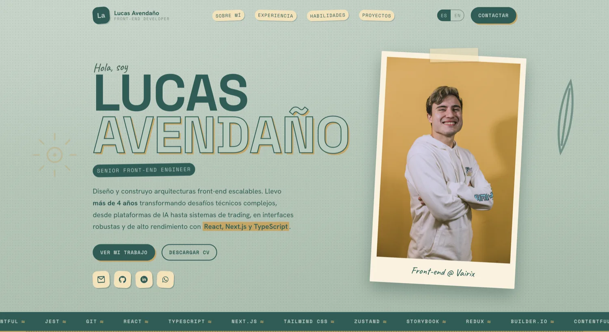
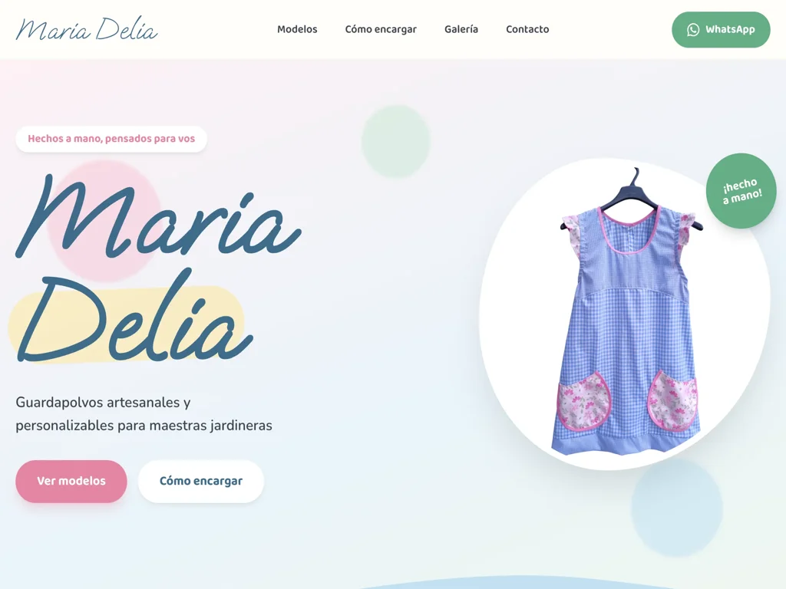
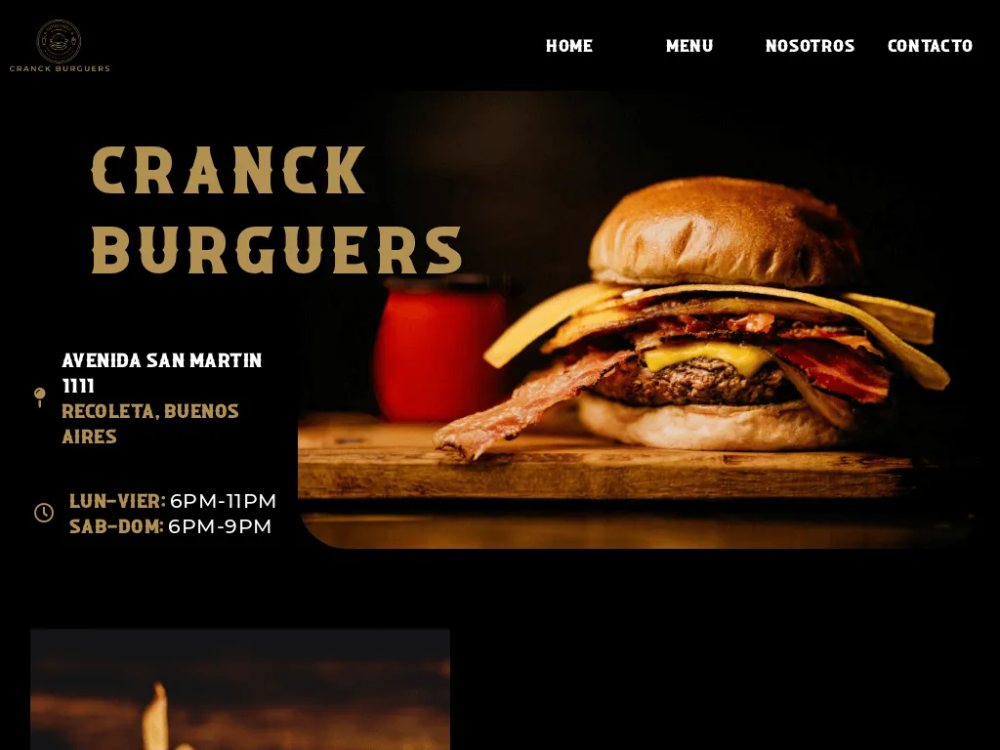
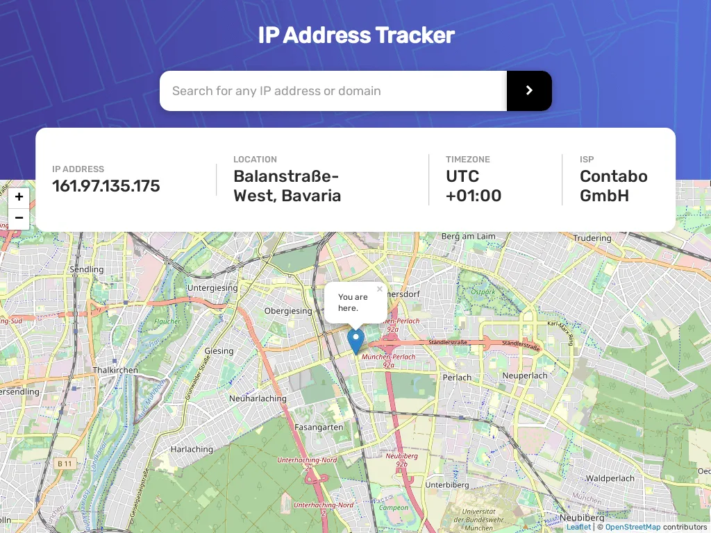
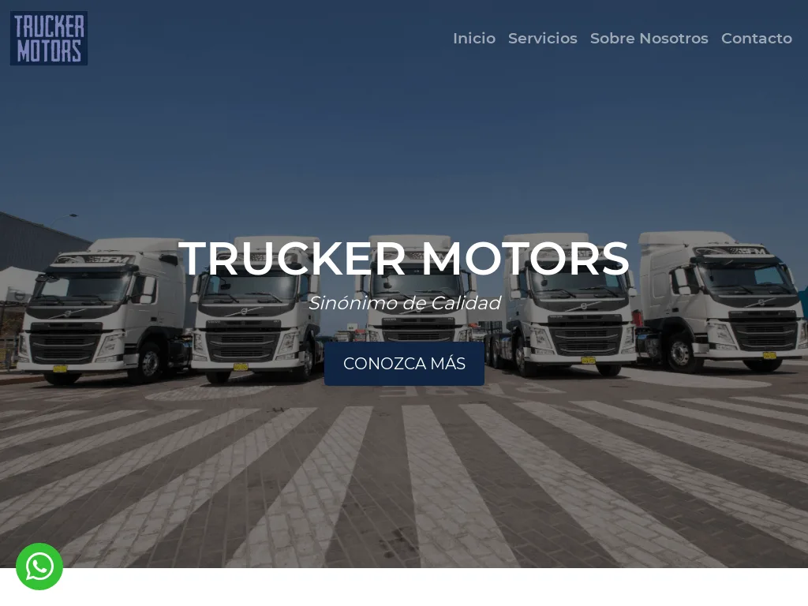
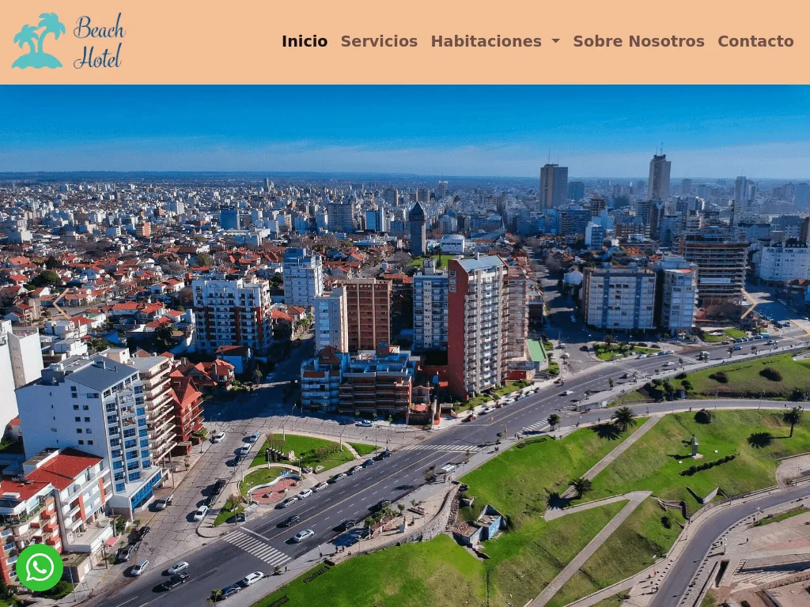

Portfolio
El sitio que estás viendo. Diseño editorial bilingüe (ES/EN) construido con Tailwind CSS v4 y JavaScript vanilla, con animaciones al hacer scroll, parallax y microinteracciones.
Hola, soy
Senior Front-end Engineer
Diseño y construyo arquitecturas front-end escalables. Llevo más de 4 años transformando desafíos técnicos complejos, desde plataformas de IA hasta sistemas de trading, en interfaces robustas y de alto rendimiento con React, Next.js y TypeScript.
01Sobre mí
Desarrollador front-end obsesionado con el rendimiento, la accesibilidad y las interfaces que se sienten humanas.
Soy Lucas Avendaño. A lo largo de mi carrera, he pasado de construir sitios a medida a asumir la responsabilidad técnica y el desarrollo end-to-end de productos web complejos para clientes internacionales. Mi enfoque principal está en la arquitectura mantenible, la experiencia de desarrollo (DX) y la resolución autónoma de problemas para aplicaciones a gran escala. Siempre busco aprender cosas nuevas y expandir mis conocimientos hacia otras áreas, guiado por la idea de no limitarme únicamente al front-end; actualmente estoy profundizando en tecnologías de nube como AWS para aportar una visión más integral y versátil al ciclo de desarrollo.
Mis bases técnicas y lógicas se formaron cursando Ingeniería en Sistemas en la UTN FRLP. Me apasiona la tecnología, la innovación y el diseño de videojuegos. Fuera del código y las terminales me vas a encontrar cerca del mar: amo la playa, las olas y el surf en particular. Es mi forma de equilibrar el estrés: a veces sufro con bugs, otras veces con el mar.
02Experiencia
2022 — Presente
Parte de un equipo de front-end ágil, contribuyendo a varios proyectos internacionales con tecnologías modernas como React, Next.js, TypeScript y Tailwind CSS.
Plataforma empresarial (end-to-end) para la construcción, entrenamiento y despliegue de modelos de IA. Asumí la responsabilidad técnica del ecosistema de interfaces y la lógica cliente para los agentes de IA conversacionales. Partiendo de un prototipo inicial, me encargué de refactorizar, escalar y evolucionar el módulo hacia un estándar de producción robusto. Ejecuté migraciones críticas y me encargué de la adición de nuevas features, gestionando lógicas complejas de hilos (threads), streaming de respuestas en tiempo real y manejo avanzado de estado utilizando Vercel AI SDK.
Plataforma de noticias gamificada orientada a despolarizar el discurso político. Construí interfaces dinámicas integrando sistemas robustos de validación de datos, colaborando de cerca con el equipo backend para un consumo eficiente de APIs en NestJS.
Exchange regulado de apuestas deportivas que opera con la exigencia de una plataforma de trading financiero. Fui el principal encargado de la migración estratégica de la arquitectura de marketing de Contentful hacia Builder.io y tomé el desafío de portar la experiencia nativa (iOS/Android) hacia una aplicación web altamente responsiva dentro de un pequeño equipo.
2020 — 2022
Construí y mantuve sitios WordPress a medida para pequeños negocios: personalización de temas, optimización de rendimiento y publicación de contenido.
03Habilidades
04Proyectos personales

El sitio que estás viendo. Diseño editorial bilingüe (ES/EN) construido con Tailwind CSS v4 y JavaScript vanilla, con animaciones al hacer scroll, parallax y microinteracciones.

E-commerce artesanal para guardapolvos personalizables. Construido con React 19, TypeScript, Vite y Tailwind CSS v4, con Sveltia CMS y pedidos por WhatsApp.

Sitio diseñado con WordPress y Elementor. Información del comercio con un menú simple y claro.

Hecho con HTML5, CSS3 y JavaScript. Consumo de dos APIs para el rastreo de IP y el mapa en tiempo real.

Construido con HTML5 y Bootstrap 5. Colores sobrios acordes a la seriedad de la marca.

HTML5, Bootstrap 5 y JavaScript. Paleta inspirada en la arena y el mar para un resort frente a la playa.
05Contacto
¿Buscás escalar tu producto web o llevar la arquitectura de tu front-end al siguiente nivel? Escribime por el formulario o contactame por cualquiera de mis redes. ¡Respondo rápido!